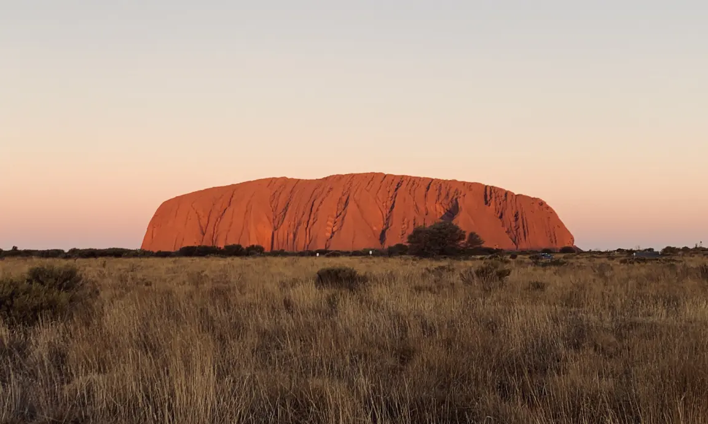
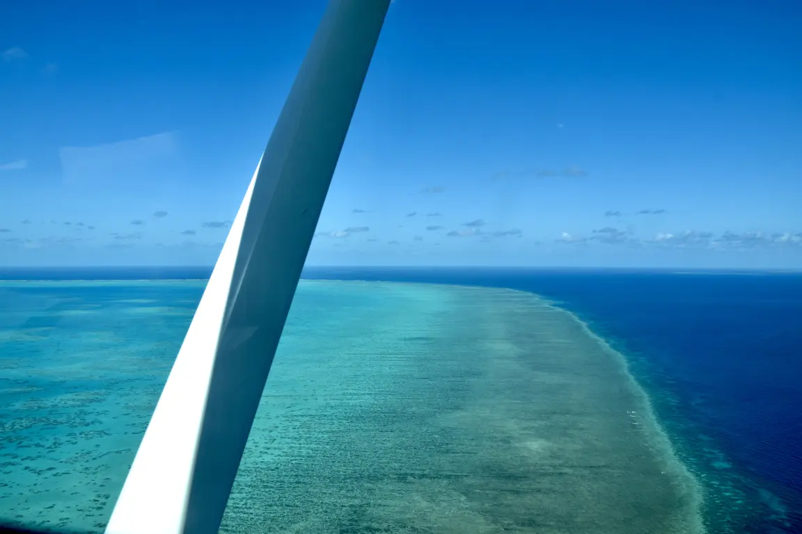
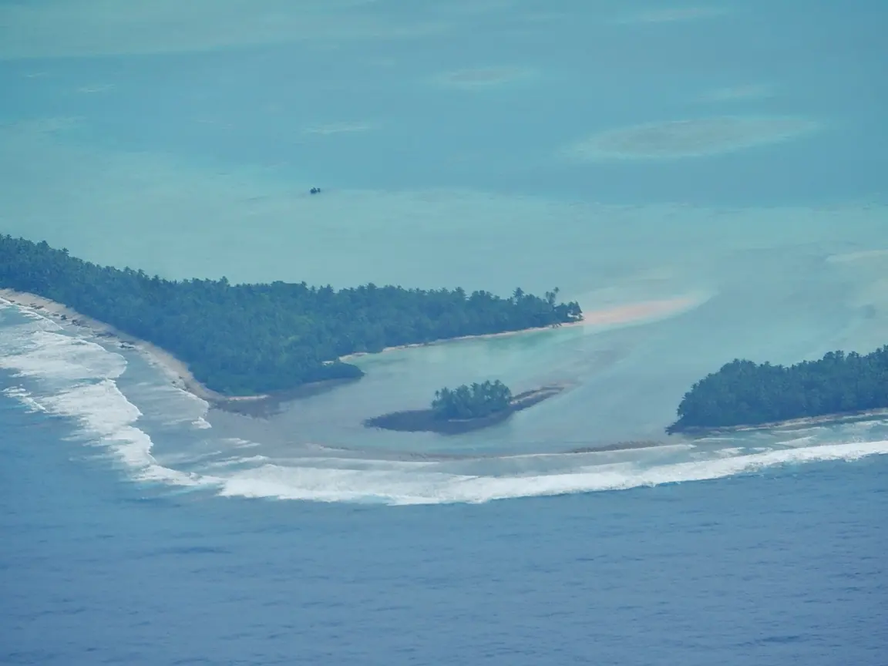
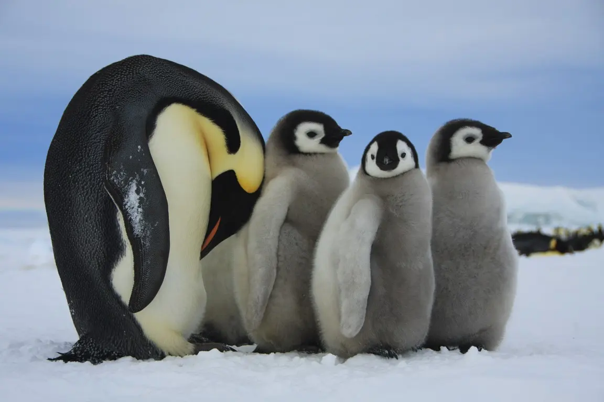
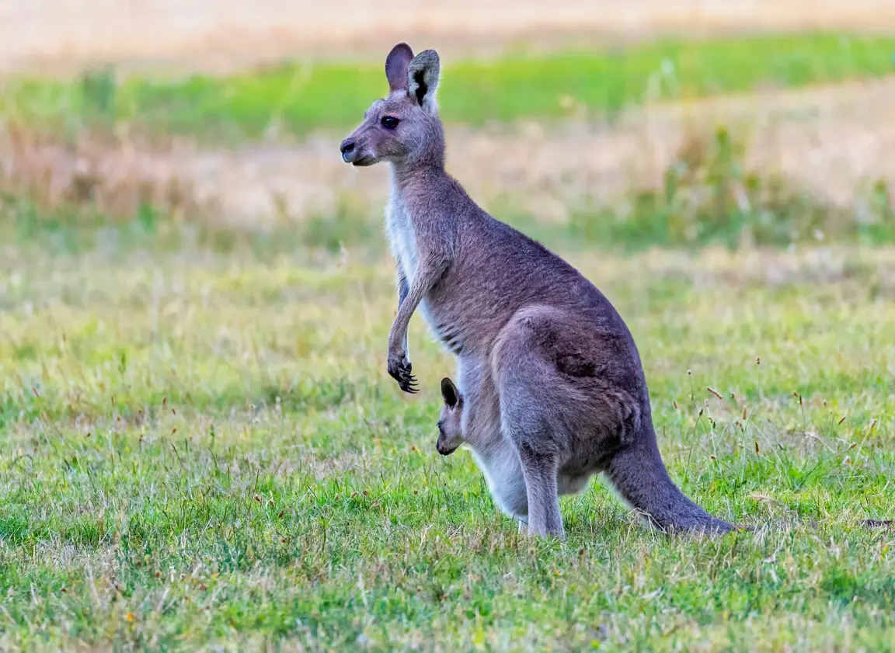
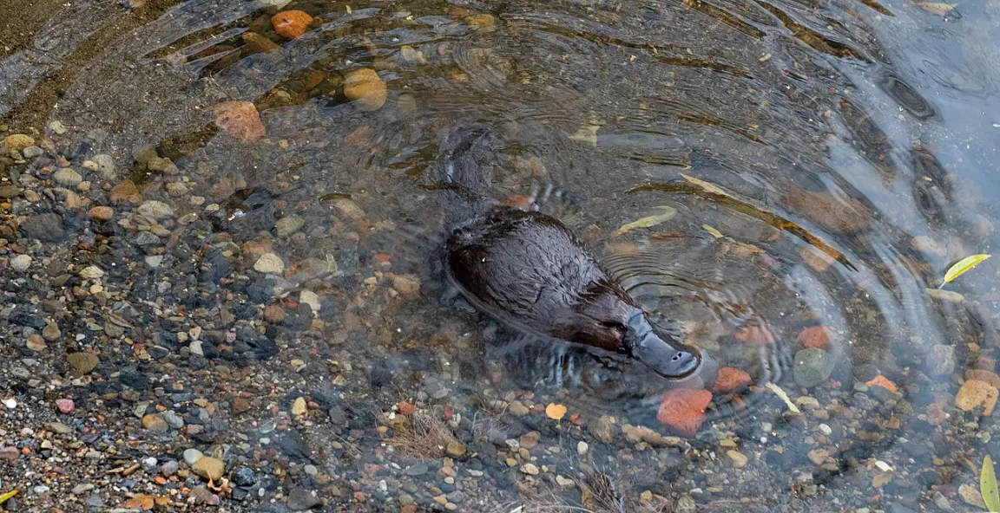

🦘 Izolace = jedinečná příroda
Austrálie byla dlouho oddělená od ostatních pevnin, a tak se tu vyvinuli vačnatci (klokan, koala) i ptakopysk. Původní obyvatelé jsou Aboriginci.
Pro 7. ročník: nejmenší světadíl, ostrovy Tichomoří a oblasti kolem pólů.
Austrálie je nejmenší světadíl. Leží v pásu obratníku Kozoroha, kde převládá sestupné suché proudění, proto zabírá vnitrozemí poušť a polopoušť – outback. Lidé žijí hlavně na vlhčím jihovýchodním pobřeží (Sydney, Melbourne).
Austrálie byla dlouho oddělená od ostatních pevnin, a tak se tu vyvinuli vačnatci (klokan, koala) i ptakopysk. Původní obyvatelé jsou Aboriginci.
Tisíce ostrovů v Tichém oceánu: Melanésie, Mikronésie, Polynésie. Patří k ní i Nový Zéland (původní obyvatelé Maorové). Nízkým korálovým ostrovům hrozí stoupání hladiny oceánu.
Arktida na severu je zamrzlý oceán obklopený pevninami. Antarktida na jihu je pevnina pod mohutným ledovcem.
Jak si je nesplést? Zapamatuj si zvířata: lední medvěd žije jen v Arktidě, tučňáci hlavně kolem Antarktidy. Antarktida je zároveň poušť – ne kvůli horku, ale protože tam spadne velmi málo srážek. Podle mezinárodní smlouvy slouží k mírovému vědeckému výzkumu; vědce zajímá hlavně led, který uchovává záznam o podnebí dávné minulosti.
Typická chyba: myslet si, že poušť musí být horká. O poušti rozhoduje nedostatek srážek.
Pod ledem je pevnina, srážek spadne velmi málo a žijí tu tučňáci. O kterou polární oblast jde?
✅ Jde o Antarktidu.
Porovnej suché australské vnitrozemí, korálové ostrovy a ledovou Antarktidu. Klokan a ptakopysk připomínají dlouhou izolaci Austrálie.






Austrálie je nejmenší světadíl a ze světadílů, kde lidé trvale žijí, je nejsušší a nejřidčeji osídlená (ještě sušší je Antarktida, kde žijí jen vědci na stanicích). Vnitrozemí zabírá polopoušť a poušť zvaná outback, obyvatelstvo žije hlavně na jihovýchodním pobřeží. Oceánie je souhrn tisíců ostrovů v Tichém oceánu.